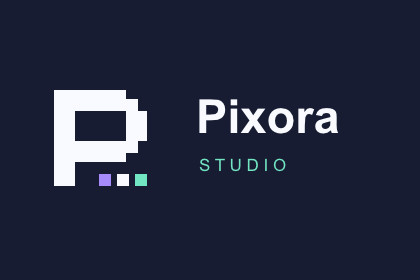
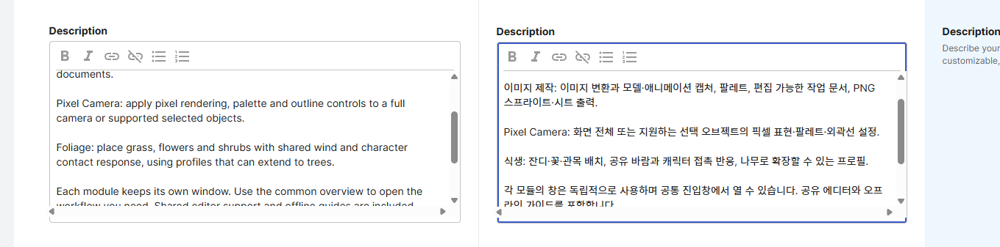
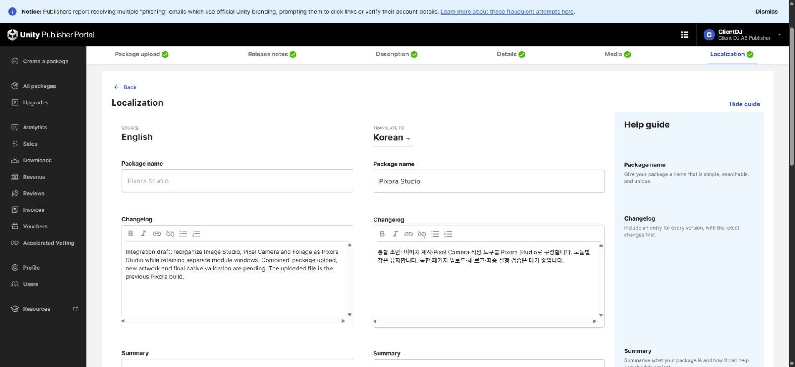
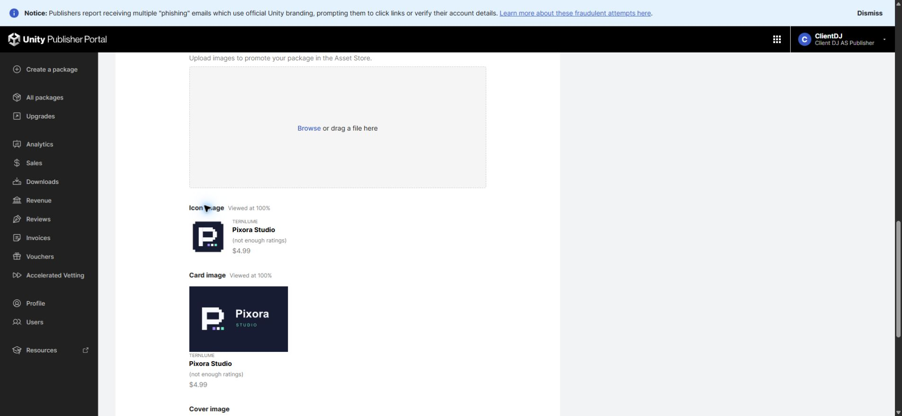

Tracefolio REPORTS & ISSUES
Tracefolio REPORTS & ISSUESPixora Studio 전용 로고와 판매 초안 적용
검증 대기실제 Affinity 로고 이미지를 제품에 연결하고 셀러 아이콘·카드를 저장했습니다. 원본 .af 저장과 Unity 화면 검증은 남아 있습니다.
작업 결과
로고는 실제 Affinity 벡터 도형·텍스트로 제작하고 render_spread 결과를 그대로 보관했습니다. 제품 소스 연결 및 셀러 아이콘·카드 적용을 완료했습니다. 최종 제출은 하지 않았습니다.

변경 내용
적용 내용
Image Studio·Pixel Camera·Foliage·공통 진입창의 브랜드 참조를 새 이미지로 연결했습니다. 기존 아트·모듈 창·클래스·GUID는 보존했습니다.
판매 설명은 4언어에서 제품 원문 이름을 유지합니다. 예: Foliage - 식생 : 설명.

수정 전에는 한국어 설명의 Image Studio와 Foliage 이름이 번역되어 있었습니다.

수정 후에는 영문 모듈 이름 뒤에 번역한 기능 이름을 표시합니다.

브랜드 미디어는 같은 구도의 변경 전 캡처를 확보하지 못했으므로 해당 영역의 전후 화면 비교 완료로 표시하지 않습니다. 기존 커버·갤러리는 보존했습니다.
검증
Affinity 3.3.1.4940 실제 연결·글꼴·렌더 결과의 크기/바이트/시각 검사. 저장된 아이콘·카드 CDN URL을 전체 새로고침 후 재확인했습니다. 영문 설명과 한국어·일본어·중국어 저장 설명을 대조했습니다. 제품 6개 및 공유 9개 어셈블리의 정적 컴파일 통과; Unity 네이티브 UI 검증은 아닙니다.
교훈 검토: 모듈 원문 이름 유지 규칙을 프로젝트 문서에 추가했습니다. 전역 지침은 기존 권한 복구·프로젝트 경로 규칙과 중복되어 변경하지 않았습니다. XERJ 사용 근거는 작업 시간 항목에 기록했습니다.
남은 사항
Affinity의 프로젝트 전용 허용 폴더 추가 및 실제 사용자 SID Modify ACL 적용 후 호스트 파일 생성·수정·삭제는 통과했으나, 실제 saveAs·export는 PERMISSION_DENIED입니다. 정확한 MCP 접근 거부 원인은 미확인입니다. 편집 가능한 .af 파일 저장·재열기, PNG/SVG 출력은 미완료이며 문서는 Affinity 메모리와 재생성용 작업 JSON으로 보존했습니다. 바탕화면이나 다른 임시 위치에는 저장하지 않았습니다.
Unity 화면 실행·설치 검증, 새 비교 GIF, 대형 커버/갤러리 갱신 및 통합 패키지 업로드·최종 제출은 남아 있습니다. 포털에 업로드된 파일은 이전 Pixora 빌드입니다. 캡처는 실제 원본을 보존했으며 Affinity 저장 제한으로 별도 편집·최적화를 수행하지 않았습니다.
작업 시간
- 제안 시간: 로고 제작·제품/셀러 적용 20
40분; 권한 오류 확인 후 코드·문서·패키지 잔여 1525분으로 수정 안내 - 실제로 완료된 시간: 01:07:07 KST 시작, 55분 경과. 이 시점은 구현·정적 검사 및 초안 저장 기록 시점이며 전체 요청 완료 시각이 아닙니다. Affinity 원본 저장·Unity 실행/GIF는 미완료.
- XERJ: 사용 — XERJ PackageExporter 검색 후보를 실제 현재 소스로 대조. 새 Runtime·shader 등 인덱스 밖은 rg 사용; 인덱스 갱신은 확인하지 않음.